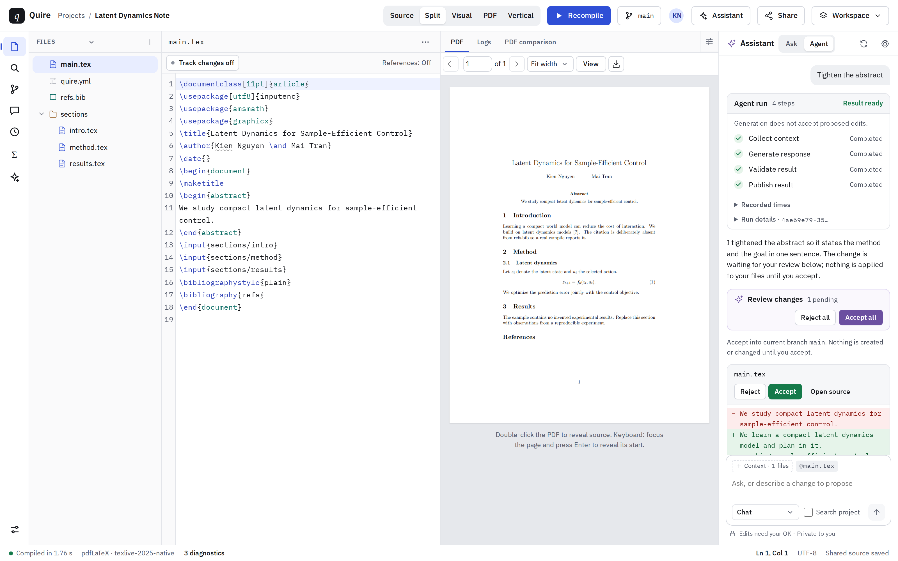

Source
A code editor with LaTeX autocomplete, linting, project search, and Vim or Emacs keys.
Self-hosted LaTeX for research teams
Edit source or a visual document, watch the PDF build beside it, and keep every change in real Git, on infrastructure you run.

Co-authors who live in source and co-authors who never want to see a backslash can work in the same file.
A code editor with LaTeX autocomplete, linting, project search, and Vim or Emacs keys.
Source and PDF side by side. SyncTeX connects a line of source to its place on the page.
Edit the document directly, with tools for symbols, tables, figures, and citations.
Read the compiled paper on its own, with zoom, page navigation, and presentation views.
Real Git, not an export
Clone it, branch it, commit it. Work offline with the tools you already use, then bring your changes back to Quire.
AI assistant
Ask about your paper, or give the agent a task. It proposes a diff, and nothing changes in your source until you accept it.
Work in the same project at the same time, with role-based permissions.
Suggest edits, resolve threads, and review tracked changes.
Start blank, pick a template, or bring existing files in a ZIP.
pdfLaTeX, XeLaTeX, and LuaLaTeX run in sandboxed workers, with diagnostics linked to source.
Edit bibliographies, import by DOI, and search configured reference providers.
Compare versions, see who changed what, and restore earlier work.
Self-hosting
Run Quire for your lab, department, or yourself. Projects stay on machines you manage, and you connect only the services you choose.
See how to self-hostSQLite, local blobs, and Git repositories on one machine.
PostgreSQL, Redis, and S3-compatible storage with separate compiler workers.
Accounts, organizations, SAML, OIDC, LDAP, and role-based permissions.
Documented setup, compiler readiness checks, signed backups, and recovery.
Yes. Import a project ZIP, or start from a blank project or a published template. You can export your source at any time.
No. Writing and compilation work without one. The assistant and other connected services use providers you configure.
The local setup uses Bun, Node.js, and Git. Native compilation also needs Linux with a TeX distribution and the documented isolation tools. The quick start list the requirements and readiness checks.
Not yet. Quire is in active development, and some administration, accessibility, and integration work remains. The feature matrix records what is available and what is not.
Set up a workspace in a few commands.
Run it locally